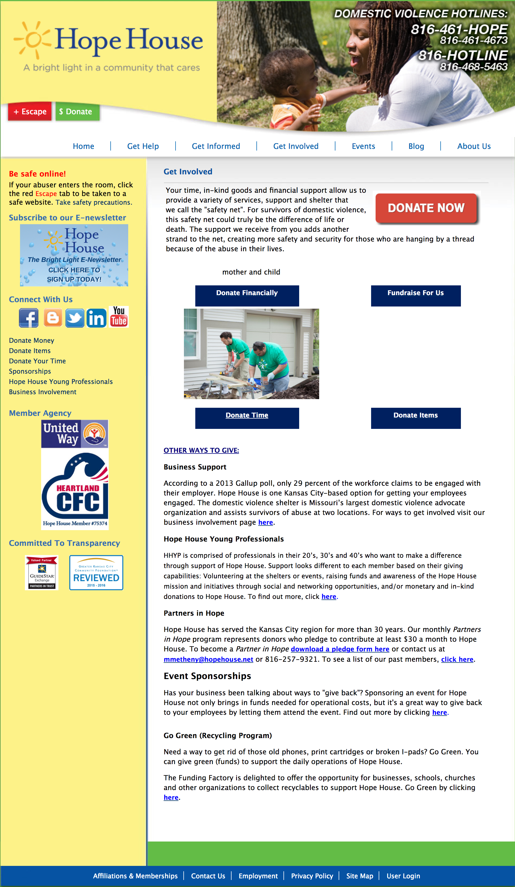
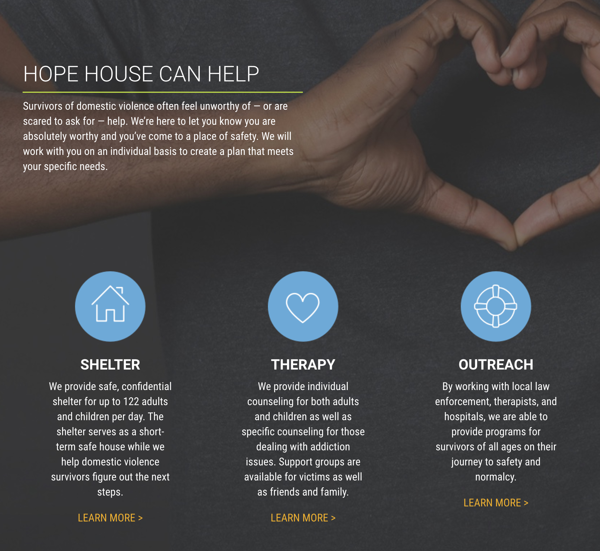
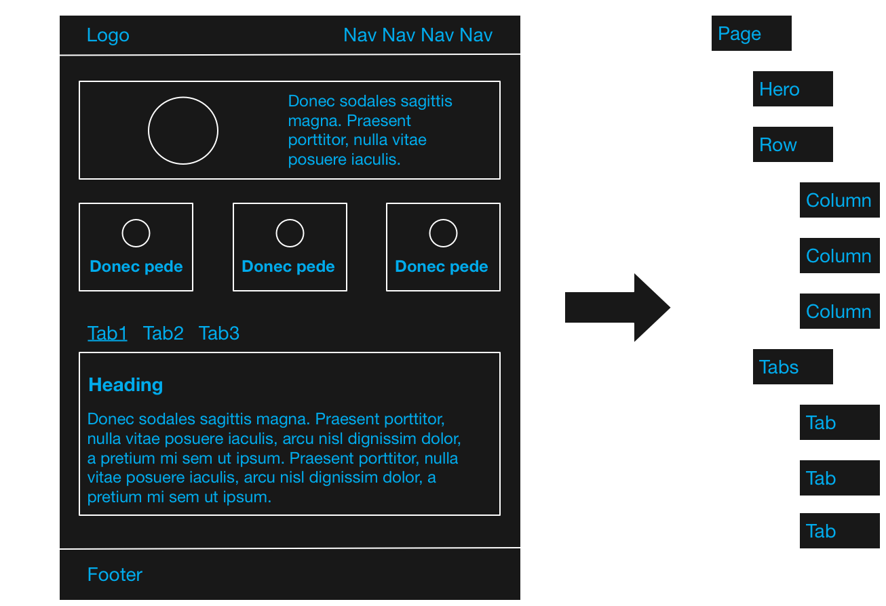

Building Component Based Drupal Sites With Bricks
Karl Kedrovsky
VML
karl.kedrovsky@vml.com
karl@kedrovsky.com
@karlkedrovsky
Motivation


Component Based Design
Example

Components
-
Section
- Text
-
Row
- Image and Text
Example
Characteristics
- Nested
- Some Are For Content (Text, Image and Text)
- Some Are For Layout (Row)
- Some Are For Both (Section)
Goals
Content Managers
- Easy to author
- Choose, not create, layout
- Hard to break the design
- Use a minimum of tools
Developers
- Leverage Drupal
- Right Tool For The Job
- Flexible
The Solution
Entity Construction Kit, Inline Entity Form, and Bricks
Entity Construction Kit
- Create custom entities without code
Inline Entity Form
- Inline editing of referenced entities
Bricks
- Easily order and nest entity references
- Lightweight - leverages existing Drupal tools
- Flexible - use any entity type you want
- Seperates content entities and layout entities
Content Managers
- Familiar interface - just like menus and taxonomy
- Easy mental mapping
- Does not have to be concerned about page design
- Inline Entity Form makes content authoring intuitive
Developers
- No custom code/modules
- Components are as easy to create, manage, etc. as content types
- Layout Discovery seperates content from layout
A Simple Example

Demo
Modules
- Bricks
- Entity Construction Kit (dev version)
- Inline Entity Form
- Layout Discovery (in core)
- Paragraphs
Awesome Demo
Or

A Small Lie
Removing Default Layouts
/**
* Implements hook_layout_alter().
*/
function remove_default_layouts_layout_alter(&$definitions) {
// Disable default layouts.
unset($definitions['layout_onecol']);
unset($definitions['layout_twocol']);
unset($definitions['layout_twocol_bricks']);
unset($definitions['layout_threecol_25_50_25']);
unset($definitions['layout_threecol_33_34_33']);
}
Random Tips and Best Practices
Design -> Drupal
Components -> Entities/Bricks
Variations -> View Modes
Layout -> Layout Discovery
New Entity or Variation?
Entities
- Bricks can use any entity type
- Start with ECK - it's easy and it works
- Default to using a brick for everything
- For Views use an entity with a Views Reference Field field
- Consider custom entities for creating reusable component libraries
Brick Field Limitation
- Can only reference one entity type
- Dynamic Entity Reference
Resources